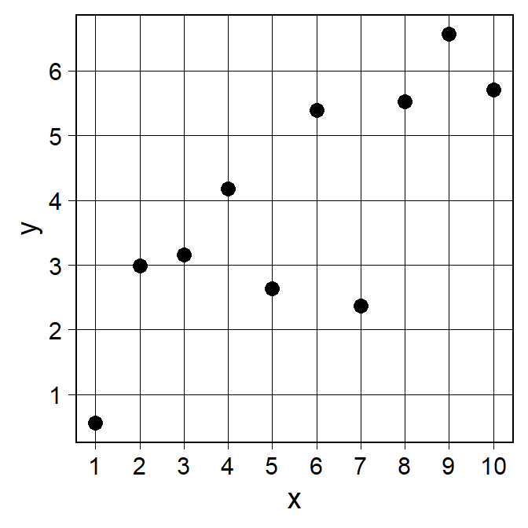
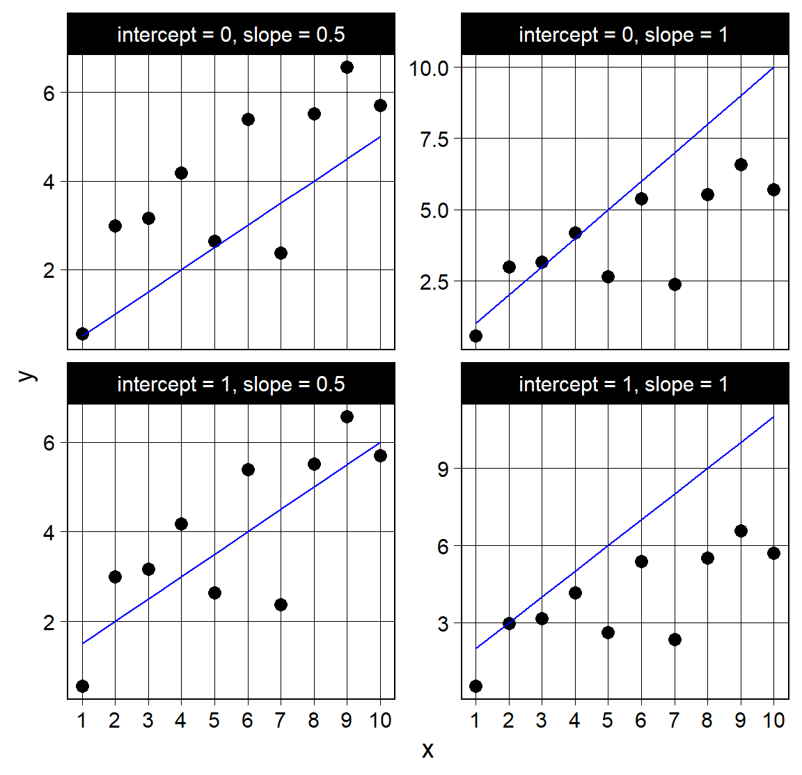
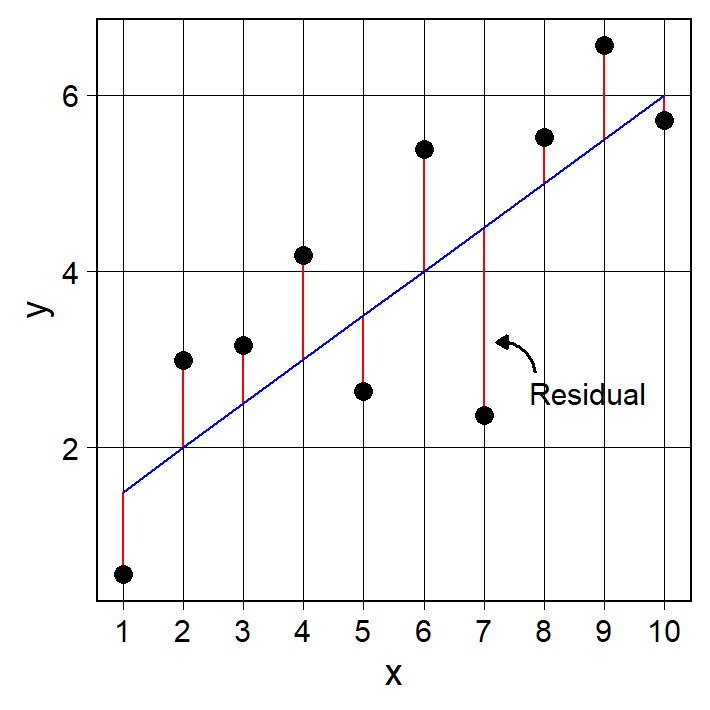

library(tidyverse)
d1_lm <- tibble(x = 1:10,
y = c(0.56, 2.99, 3.16, 4.18, 2.64,
5.39, 2.37, 5.52, 6.57, 5.71))Session 20: Linear Regression
This week we will learn about linear regression. In keeping with the style from the early days of the statistics training, we will start by watching what Josh Starmer has to say about this topic in this StatQuest video (Linear Regression, Clearly Explained!!!).
We introduce some data in the code chunk below.
Using the values in d1_lm, we will learn how to find the best-fitting line and what statistical conclusions we can draw about it once it is identified. But before we get to that, let’s take a look at these data in a scatterplot.
d1_lm |>
ggplot(aes(x = x, y = y)) +
geom_point(size = 3) +
theme_linedraw(base_size = 14) +
scale_x_continuous(breaks = 1:10) +
scale_y_continuous(breaks = 1:7) +
theme(panel.grid.minor = element_blank())
We see a rather clear linear relationship between x and y. Recall that the equation for a linear regression line (one predictor) is:
\[\hat{y} = \beta_0 + \beta_1 x\] Where:
- \(\hat{y}\) = predicted value of the outcome
- \(x\) = predictor variable
- \(\beta_0\) = intercept (value of \(\hat{y}\) when \(x = 0\)
- \(\beta_1\) = slope (change in \(\hat{y}\) for a one-unit increase in \(x\))
- Study the plot above, imagine a line representing the relationship between
xandyand see if you can guess the approximate values for \(\beta_0\) and \(\beta_1\).
The first thing we are going to do in order to later find the best-fitting line, is to write a function that lets us add predicted values (\(\hat{y}\)) to any tibble. This function will take the data as well as \(\beta_0\) and \(\beta_1\) as inputs and add a column with predicted values to the data.
- Fill in the blanks in the function below so that the predicted values are calculated correctly for a given \(\beta_0\) and \(\beta_1\).
add_preds <- function(data, x_col, intercept, slope){
data |>
mutate(pred = _____ + _____ * {{_____}})
}- Next, use this function to help you recreate the plot below, adding the trend line using
geom_line(). This time, make sure you combine the data and usefacet_wrap()to create the individual panels, rather than relying on functions for thepatchworkpackage.

We hope you will agree that, out of these four sets of guesses for the intercept and slope, the pair \(\beta_0 = 1\) and \(\beta_1 = 0.5\) appears to produce the best-fitting line. Why? One quick way to assess the fit is to look at how many points fall on each side of the line. The more evenly the points are split, the better the fit tends to be. However, a far better approach is to study the residuals, which represent the distances between the observed values and the predicted values from the line. Examining the residuals provides a more systematic and precise way to evaluate how well a line fits the data, allowing us to quantify the error rather than just eyeballing the pattern. Below we show code how vertical lines representing the residuals can be added to the \(\beta_0 = 1\) and \(\beta_1 = 0.5\) plot.
d1_lm |>
add_preds(x, 1, 0.5) |>
ggplot() +
geom_segment(aes(x = x, xend = x,
y = pred, yend = y),
color = "red") +
geom_point(aes(x = x, y = y),
size = 3) +
geom_line(aes(x = x,
y = pred),
color = "blue") +
labs(y = "y") +
theme_linedraw(base_size = 14) +
scale_x_continuous(breaks = 1:10) +
theme(panel.grid.minor = element_blank()) +
annotate("curve",
x = 7.85, y = 2.85,
xend = 7.2, yend = 3.2,
curvature = 0.45,
arrow = arrow(length = unit(0.17, "cm"), type = "closed"),
linewidth = 0.7) +
annotate("text", label = "Residual",
x = 7.75, y = 2.62, size = 4,
hjust = 0)
In plain words, residuals show how wrong the line is at each point. We can therefore define the best-fitting line as the one that minimizes the distances between the observed values and the predicted values. If we square these distances and sum them we get the Residual Sum of Squares (RSS):
\[RSS = \sum_{i=1}^{n} (y_i - \hat{y}_i)^2\]
The goal of linear regression is to find values of \(\beta_0\) and \(\beta_1\) that that minimize the RSS. This is known as the least squares principle, and it is the reason why the most common form of linear regression is called least squares regression.
- Let’s test this idea to see how the four intercept/slope guesses we presented above translates into RSS values. Fill in the blanks below so that RSS is outputted for each intercept/slope pair. Reflect on how the RSS values correspond to the plots from the previous exercise.
d1_lm |>
add_preds(___, ___, ___) |>
mutate(guess = "intercept = 1, slope = 1") |>
add_row(d1_lm |>
add_preds(___, ___, ___) |>
mutate(guess = "intercept = 1, slope = 0.5")) |>
add_row(d1_lm |>
add_preds(___, ___, ___) |>
mutate(guess = "intercept = 0, slope = 1")) |>
add_row(d1_lm |>
add_preds(___, ___, ___) |>
mutate(guess = "intercept = 0, slope = 0.5")) |>
group_by(_____) |>
mutate(resid = y - _____) |>
summarize(rss = _____)The probability that we found the best intercept/slope combination by guessing only four times is very low. Instead, we are now going to perform a so-called grid search: we will test many values that differ by small increments, try them all, and identify the combination that produces the smallest RSS.
- The first thing we need, to make iterating across many intercepts and slopes easier, is a function that takes any tibble together with a chosen intercept and slope, calculates the RSS, and returns it. Fill in the blanks to complete the function below.
rss <- function(data, x_col, y_col, intercept, slope){
data |>
mutate(pred = _____ + _____ * {{_____}},
resid = {{_____}} - _____) |>
summarize(rss = _____)
}Next, we generate our guesses. We saw above that the best intercept appears to be somewhere around 1, so we will “search” in that vicinity. We do the same for the slope, focusing on values around 0.5. We begin by placing our sequences in a tibble and then use the expand() function to create all combinations of intercept and slope values. We then use the map2() function, which allows us to iterate over two sequences simultaneously. Finally, we add our newly calculated RSS values to the guesses tibble so that we can keep track of which RSS value belongs to each intercept/slope pair.
- Complete the code below so that the
interceptsequence in theguessestibble ranges from0.75to1.25in steps of0.001. Do the same for theslopevalues, but this time let the range be from0.25to0.75.
guesses <- tibble(intercept = seq(____, ____, ____),
slope = seq(____, ____, ____)) |>
expand(intercept, slope)
rsss <- map2(guesses |> pull(intercept),
guesses |> pull(slope),
\(i, j) rss(d1_lm, x, y, i, j)) |>
list_rbind()
is_rss <- guesses |>
add_column(_____)Now use the
is_rssobject to find theinterceptandslopevalues corresponding to the best-fitting line. Plot the results and explain how theinterceptandslopevalues should be interpreted.The
map2()call took a while to run. In reality, we do not need to perform a grid search to find the bestinterceptandslope. Thelm()function computes these values for us automatically using a closed-form solution. Instead of trying many combinations,lm()applies the least-squares formulas directly, using linear algebra to calculate the exact coefficients that minimize the RSS. This makes the estimation precise, fast, and mathematically guaranteed to find the optimal line without searching over a grid of possibilities.Run the code below and check that the
lm()algorithm finds the same intercept and slope as the grid search did.
lm(y ~ x, data = d1_lm)
Josh spends quite a bit of time talking about the main effect size measure associated with linear regression: r-squared (\(R^2\)), also known as the coefficient of determination. The formula for calculating \(R^2\) is straightforward:
\[R^2 = \frac{TSS - RSS}{TSS} \] Where:
- TSS (total sum of squares) = \(\sum_{i=1}^{n} (y_i - \bar{y})^2\)
- RSS is calculated the same way as before.
The rrs() function we wrote earlier gets us about halfway to calculating \(R^2\). All we need to do now is calculate the total sum of squares and finally find the variance explained by the regression line.
- Complete the
r2()function by filling in the blanks so that \(R^2\) is calculated correctly.
r2 <- function(data, x_col, y_col, intercept, slope){
data |>
mutate(pred = _____ + _____ * {{_____}},
resid = {{_____}} - _____,
mean_y = mean({{_____}}),
dev_y = {{_____}} - _____) |>
summarize(rss = _____,
tss = _____,
R2 = (_____ - _____) / _____) |>
select(R2)
}- It is, however, a bit tedious to manually input the
interceptandslopevalues in the function above every time you want to calculate \(R^2\). In most situations, we would simply let thelm()function compute \(R^2\) for us. We can use theglance()function from thebroompackage, which we introduced several weeks ago, to output the values we want in a tidy (easily transformable) format. Run the code below and make sure that you completed ther2()function correctly by comparing the \(R^2\) from that function to thelm()+glance()output.
lm(y ~ x, data = d1_lm) |>
broom::glance()How would you interpret the \(R^2\) in this case. If the effect small or large?
Calculate the correlation coefficient (\(r\)) comparing
xandyin thed1_lmdata and explain how it compares to \(R^2\).
Josh shows how we can calculate the p-value for the effect size by first computing the F-statistic (as we learned in the ANOVA sessions) and using simulation to generate a null distribution. This is a valid approach and one you can try for yourself, and the results from a theory-based version of this test is given by the glance() function. However, nothing prevents us from using the \(R^2\) value directly and comparing it to a simulated null distribution: by repeatedly generating data under the null hypothesis, calculating \(R^2\) for each simulated dataset, and then seeing where our observed \(R^2\) falls in that distribution, we can estimate a p-value and assess the significance of the effect size without relying on the F-statistic.
- Complete the code below to generate a \(R^2\) null distribution. What do you expect the null distribution to look like in this case? Make a prediction about the shape of the distribution, and then check whether your expectation was correct by making a histogram. Show that using simulated \(R^2\) indeed works by computing the p-value and comparing it to the one from the
glance()output.
obs_r2 <- lm(___ ~ ___, data = d1_lm) |>
broom::glance() |>
pull(_____)
sims <- map(1:10000, \(i) tibble(x = 1:10,
y = rnorm(10)))
rsq <- map(sims, \(i) lm(___ ~ ___, data = i) |>
broom::glance()) |>
list_rbind()- Would a permutation test based on \(R^2\) have given the same result as the simulation-based approach in this case? Justify your answer by generating a permutation-based null distribution for \(R^2\) and comparing the two approaches numerically and/or graphically.
The p-value we calculated above tells us whether the model as a whole is statistically significant. Specifically, it tests the null hypothesis that the slope coefficient is equal to zero, meaning that there is no linear relationship between the predictor and the response variable. A small p-value indicates that the model provides a better fit than a model with no predictor. The next step is to evaluate the uncertainty and significance of the slope estimate itself.
- Next, we want you to do two things: calculate the standard error of the slope estimate using bootstrapping, and calculate the p-value for the slope using permutation. You can reuse code from above and from previous sessions, and check your calculations by comparing the results to the output from the code below, where the
term == "x"row represents the slope coefficient.
lm(y ~ x, data = d1_lm) |>
broom::tidy()- Compare the p-value for the slope to the p-value obtained from the \(R^2\) -based test above. What do you notice, and why do you think this happens in simple linear regression?
Note
At this stage, simple (one predictor) linear regression can feel surprisingly redundant from a statistical perspective. Several quantities that are introduced as different ideas turn out to be very closely connected when there is only one predictor. For example, the correlation between x and y and the model’s \(R^2\) are mathematically closely related. You may also have noticed that the simulation- and permutation-based significance test for \(R^2\) seems to tell a story very similar to the significance test for the slope coefficient. This is not a coincidence. In simple regression, many of these tools are different ways of looking at essentially the same relationship between two variables. This apparent redundancy will become much more useful next week when we introduce multiple regression. With several predictors, ideas that currently seem almost interchangeable begin to separate into genuinely different concepts.
- We will now move from simulated examples to real data using the penguins dataset we have worked with several times before. Using simple linear regression, investigate the relationship between bill length and bill depth in Chinstrap penguins. What is the change in bill depth for a one-unit increase in bill length? Calculate the 95% confidence interval for this estimate. How would you interpret the intercept in this case? What is the effect size?
- Investigate whether body mass is predicted by penguin sex using linear regression. How would you interpret the slope coefficient in this case, and what familiar quantity might it correspond to?